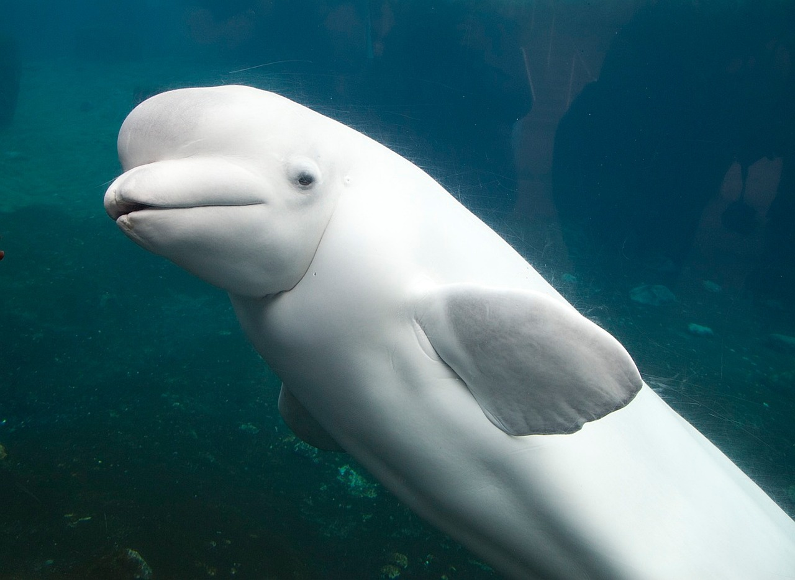

" The place for all of your beluga whale needs. "
 This is a Beluga WhaleBeluga Whale fun facts:
Cook Inlet at red marker - Map Data: Google Earth
However, a species of Beluga Whale is critically endangered.
In January of 2020, the National Oceanic and Atmospheric Administration, Fisheries reported that only 279 Beluga Whales remained in the Cook Inlet of Alaska.
That's down from 1,300 in 1979 - an 80% decrease!
It's important to protect all species of life on Earth, as their vitality to the functions of our planet may be unnoticable, but they are not irrelevant.
For more information, you can visit these links:
NOAA's Plan for the Beluga Whales
A direct guide for YOU to help the Beluga Whales
How to report a sighting of a Cook Inlet Beluga Whale